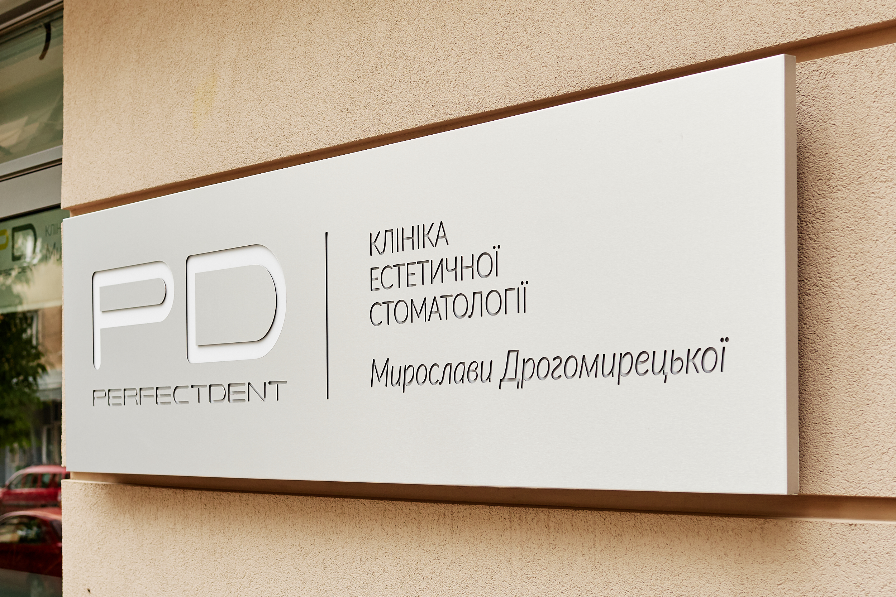

#DiscoveredByVogue: Бьюти-гид по Киеву
В совместном проекте VogueUA, Merсеdes-Benz и Mastercard® #DiscoveredByVogue редактора Vogue ездят по Украине и открывают самые интересные места. Алена Пономаренко проехала по львовским спа на Merсеdes и рассказывает, как это было.
Львов проходит у меня (как, наверное, у любого киевлянина) в категории «Любимые города». Тут прекрасно все: живость и гомон на улицах, умение рестораторов и хозяев туристических лавок и галерей обходиться с гостями, галицкая кухня, брусчатка, ароматы. Чаще всего мой маршрут пролегает по центру – просто потому, что тут и так хорошо, незачем удаляться куда-то еще. Но большой тонированный Mersedes стал тем восхитительным средством передвижения, которое доставило меня в отличные пункты назначения (с приставкой «бьюти», разумеется).

Адрес:
улица Театральная, 16

В высокий сезон (а он во Львове, кажется, не прекращается) основная масса людей мигрирует по ресторанам. Я же отправилась в спа в отеле Leopolis. Оказалось, выбор был блестящим. Два шага – и с шумной бурлящей площади Рынок попадаешь в средневековое пространство. Это не шутка и не стилизация: спа со всеми присущими ему атрибутами – кушетками, джакузи, махровыми халатами, запахами косметики (Anne Simonin, Casmara, Saint Malo) находится в каменном здании XVIII века – «в кам»яниці», как говорят во Львове.
Это как Платформа 9 ¾: из обыденного городского ландшафта перемещаешься в другое измерение. Колышутся язычки свечей, бликуют зеркала в старинных рамах, глаз скользит по древней кирпичной кладке, и мшистый аромат древних стен перемешивается с ароматом живых цветов, воска и травяного чая.
Василий Василишин – главный по спа. Идти надо непременно к нему. Объясню, почему. Изначально я планировала уютно посидеть за чаем, сделать массаж рук, в общем, камерно и достоинством провести время. Все закончилось шоколадным обертыванием, шампанским в джакузи и чувством абсолютного, полного обновления (и восторга), будто я прожила в этом самом спа маленькую жизнь.


Василий строг. Велел улечься на кушетку и стал готовить смесь. Глыбы натурального шоколада разогрел над огнем, добавил аромамасел, умастил меня с ног до головы. Аромат мгновенно перенес в детство, когда мама по выходным готовила горячий шоколад, разливала его по глазированным коричневым чашечкам, и я пила его, пока на щеках не появлялись красивые шоколадные усы.
После обертывания был серьезный лимфодренажный массаж – и я в очередной раз пообещала себе записываться на подобные процедуры только к мужчинам: у них совершенно другая энергетика – кажется, что подзаряжаешь свои батарейки. А выглянув из душа, обнаружила, что в джакузи уже набирается вода: Василий распорядился. Сказал, что нечего выдумывать: наслаждаться – так всерьез. «Даже Криштиану Роналду сбегал сюда во время игр, хоть это футболистам и запрещено», - добавил он. И я повиновалась. И надо сказать, что это было одно из самых блестящих решений за всю мою редакторскую карьеру.

Карта беспрекословно пикнула, оплачивая мои приключения, и я покатила на укладку.
Салон Юлии Паламар я открыла для себя год назад. Он произвел впечатление: после нарядного, кокетливого Львова – вдруг чистое пространство, напомнившее High Line в Нью-Йорке контрастом шумного города и свежей зелени.

Сама Юля – крутой стилист, даже по европейским меркам. Стрижет геометричные формы, но умеет и любит работать с длинными волосами. Если она не в отъезде, то попасть к ней – лучшее, что может произойти с прической во Львове. В момент моего визита Юля была в очередной командировке, но доверила меня гениальному мастеру.
Адрес:
улица Щирецкая, 36

Стилист Катя Римская предложила мне небрежные кудри. Как раз такие я и люблю. Укладка заняла совсем немного времени, а чтобы пряди не щекотали лицо, Катя прикрыла его забавным козырьком, напоминавшем об аксессуарах Chanel. Прическа получилась небрежной, красивой, довольно объемной – и держалась до вечера. Вдобавок меня напоили превосходным кофе, дали напутствие наносить несмываемый уход – и я отправилась дальше.
Путешествовать на большой машине по небольшому городу – отдельное удовольствие. Впрочем, возможно, вежливость остальных водителей – это обычное дело для львовян, а вовсе не пиетет владельцев городских малолитражек перед черным хищником. Но об этом я вряд ли когда-нибудь узнаю.
Моим последним пунктом назначения была клиника Perfect Dent. Я давно знакома с Мирославой Дрогомирецкой, ее хозяйкой, и не раз бывала в ее киевской клинике, а во Львов приехала впервые. Меня интриговал спа-ритуал по уходу за зубами.
Здесь переняли философию западных dental spa, где клиенты не испытывают дискомфорта, только радость и полный дзен. Я улеглась на кушетку, мне выдали пару наушников, предложили выбрать фильм (я остановилась на «Завтраке у Тиффани») – и начали осмотр. Доктор сказала, что хорошо бы сделать профессиональную чистку: от этого улыбка станет более яркой. Конечно, я согласилась. К моменту, когда Холли Голайтли поджигала шляпку какой-то леди своей сигаретой в длиннющем мундштуке, все было закончено. Зубы сияли белизной, и я даже отказалась от кофе, который тут предлагают всем.
Кстати, соседняя дверь – клиника для детей. Там и аквариум, и игрушки, и любезный персонал. Надо иметь в виду, что можно записываться к двум врачам одновременно – и экономить время, посещая стоматолога с детьми.
Пик – и пока я нюхаю охапку хризантем, проходит мой платеж по карте. Одно удовольствие.
Очень жаль расставаться с Mersedes. Об этом я думаю всю дорогу, задумчиво глядя в окошко InterCity. Все-таки стоило бы проверить, как расступался бы дорожный поток на трассе Львов-Киев, если бы я катила за рулем домой. Хорошо хоть моя карта со мной. Определенная доля трудолюбия, немного везения – и, кто знает, возможно, я вернусь во Львов на личном Mersedes.
Фото: Kate Lang
Видео: Анна Бугакова
Благодарность в организации тест-драйва официальному дилеру СП ООО Автомобильный Дом Украина-Мерседес-Бенц, который находится в Киеве на Столичном шоссе, 90